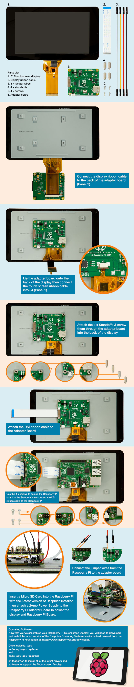

Setting Up an RPi as a Kiosk with the RPi Foundation LCD
12 Sept 2018
Specifications
- 800×480 RGB LCD display
- 24-bit colour
- Industrial quality: 140-degree viewing angle horizontal, 130-degree viewing angle vertical
- 10-point multi-touch touchscreen
- PWM backlight control and power control over I2C interface
- Metal-framed back with mounting points for Raspberry Pi display conversion board and Raspberry Pi
- Backlight lifetime: 20000 hours
- Operating temperature: -20 to +70 degrees centigrade
- Storage temperature: -30 to +80 degrees centigrade
- Contrast ratio: 500
- Average brightness: 250 cd/m2
- Viewing angle (degrees):
- Top - 50
- Bottom - 70
- Left - 70
- Right - 70
- Power requirements: 200mA at 5V typical, at maximum brightness.
Assembly

Kiosk Mode for LightDM
pi@raspberrypi:~ $ cat ~/.config/lxsession/LXDE-pi/autostart
# turn off power management so screen doesn't go blank
@xset s off
@xset -dpms
@xset s noblank
# @matchbox-window-manager &
# @matchbox-keyboard --daemon &
# @chromium-browser --incognito -noerrdialogs --kiosk http://localhost/
# Note, the multiple http's set multiple tabs
# BUT kiosk only allows 1 window with no tabs, BUT you can't accidentally
# close the browser in kiosk
@chromium-browser --incognito --kiosk --start-maximized -noerrdialogs http://pi-hole.local/admin/index.php http://plex.local:8080If you make changes and what them to take effect now:
sudo service lightdm restartLCD Brightness
root owns it and I want pi to be able to adjust it too. Create a udev rule /etc/udev/rules.d/80-backlight.rules:
SUBSYSTEM=="backlight" RUN+="/bin/chmod 0666 /sys/class/backlight/%k/brightness /sys/class/backlight/%k/bl_power"root will still own it, but anyone can set it to a value between 1-255. I find 50 is really good for inside.
echo 50 > /sys/class/backlight/rpi_backlight/brightnessRotating Display
Simple Flip
Generally you end up with the LCD mounted upside-down because people don’t pay attention to details. Simple solution to flip the LCD is to put lcd_rotate=2 in /boot/config.txt and the screen will turn upside-down.
Portrait View (90 degree rotation)
However I wanted to put it into portrait view (90 deg turn):
xinput --set-prop 'FT5406 memory based driver' 'Coordinate Transformation Matrix' 0 1 0 -1 0 1 0 0 1Note, if sshing in do: DISPLAY=:0.0 xinput ...
Disable Touchscreen
To disable the touchscreen capability do add disable_touchscreen=1 to /boot/config.txt.
nodm Config
I disabled the virtual keyboard because it takes up a lot of screen and isn’t really useful (big fingers and small keys). I type one letter every 10 seconds. :)
The file is located: /home/pi/.xsession
#!/bin/bash
xset s off
xset -dmps
xset s noblank
exec matchbox-window-manager -use_titlebar no &
#exec matchbox-keyboard &
xinput --set-prop 'FT5406 memory based driver' 'Coordinate Transformation Matrix' 0 1 0 -1 0 1 0 0 1
chromium-browser --incognito -noerrdialogs http://pi-hole.local/admin/index.php http://localhost:8080References
- raspberrypi.org: display docs
- raspberrypi.org: mechanical drawings